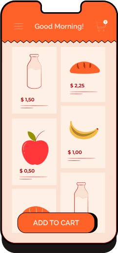
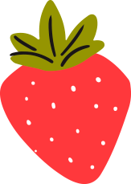
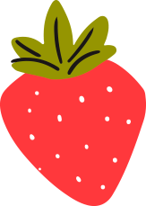

Groceries
On the Go.
Bluu Grocer Mart promises quality food products that are ethically sourced, fresh, and carefully pricked for our customers. Our products range from meat, vegetables to fruits that you'll definitely enjoy.
Quality Products, Made Everyday.

 
